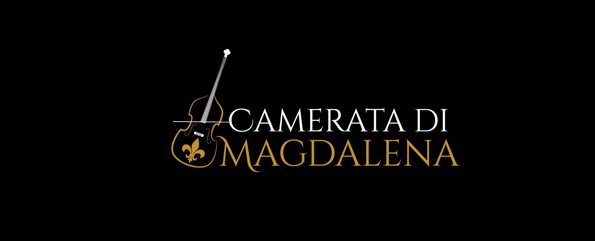

Introduction
Camerata Di Magdalena is a nonprofit 501C3 volunteer organization which raises money for feeding the homeless of South Florida through the Holy Grill of St. Nicholas. There is no cost or fee to join. It is by necessity a small ensemble and so space is limited.They are a unique student group under the guidance of Eric Berken with a focus on the practice and performance of music from the Baroque era. 

Upcoming Performances
Danse sacree et profane
Dance music of the Baroque period.
Music of Debussy, Gluck, and Bach
Saturday, Febuary 3 at 4pm
Address
Saint Nicholas Episcopal Church.
111 E Sample Road, Pompano Beach
Friday, February 9 at 7pm
Address
St Andrews Episcopal Church
100 N. Palmway.
Lake Worth Beach